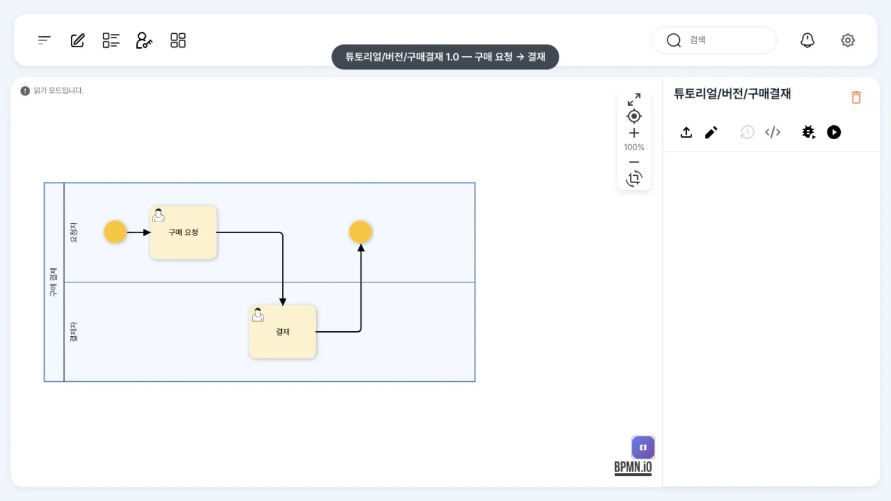
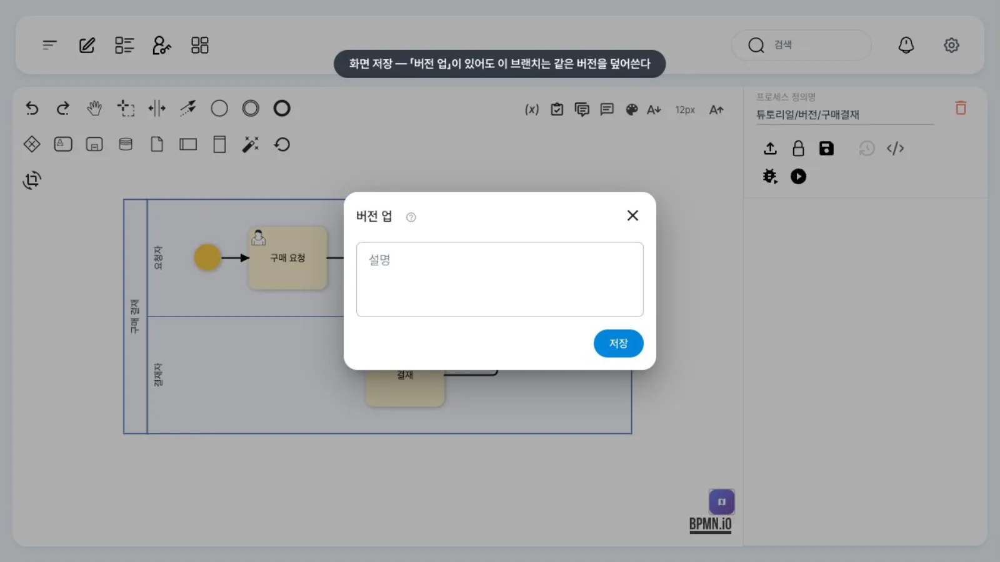
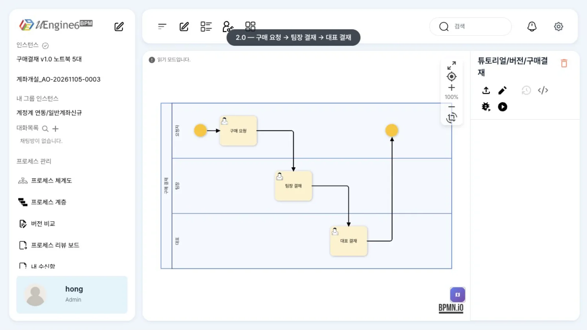
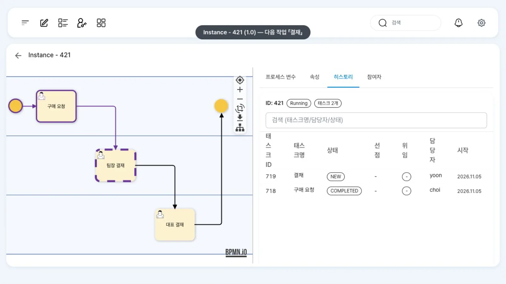
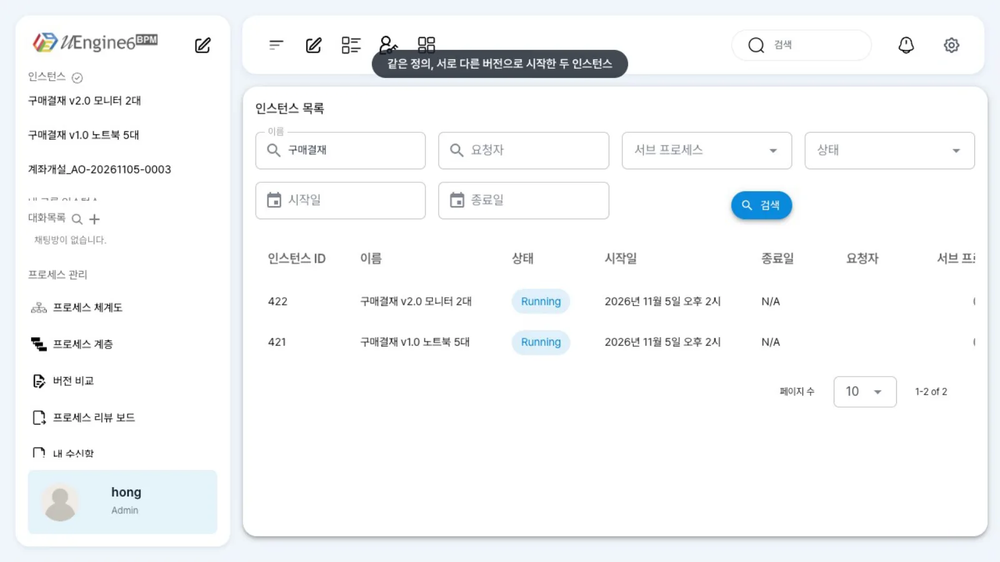
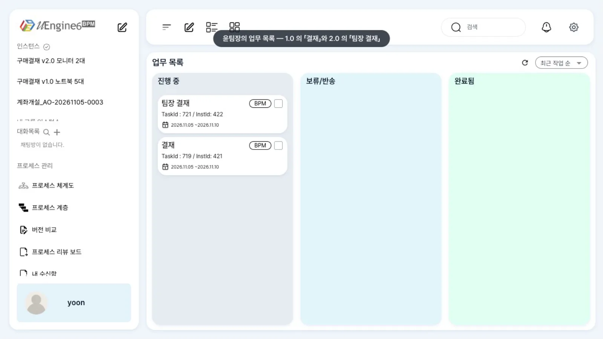

정의를 고쳐 2.0으로 배포해도 1.0으로 시작한 인스턴스는 1.0대로 끝까지 실행됩니다. 이 브랜치에서는 화면 저장이 버전을 올리지 않으므로, 버전은 archive 파일로 나누고
/definition-changes로 배포를 알립니다.
무엇을 · 왜#
프로세스는 결재 단계가 늘거나 담당자가 바뀌면서 수정됩니다. 이때 실행 중인 인스턴스에 새 정의를 적용하면 지나온 단계와 새 그림이 맞지 않아 실행에 문제가 생길 수 있습니다. 그래서 BPM 엔진은 보통 버전을 둡니다. 새 인스턴스는 새 버전으로, 실행 중인 인스턴스는 시작할 때의 버전으로 끝까지 실행됩니다(Camunda의 process definition version과 같은 개념입니다).
uEngine6에서 버전은 파일입니다.
| 파일 | 뜻 |
|---|---|
definitions/<정의 경로>.bpmn |
작업본. 모델러가 열고 저장하는 파일, 시뮬레이션이 쓰는 파일 |
archive/<정의 경로>.bpmn/<버전>.bpmn |
버전 파일. 새 인스턴스는 이 폴더에서 번호가 가장 큰 파일로 시작하고, 그 번호를 인스턴스의 def_ver_id에 적어 둡니다 |
정의 JSON의 "version" 값과 archive 파일 이름의 버전을 함께 올리면 됩니다.
따라 하기#
- 1.0 정의.
튜토리얼/버전/구매결재1.0은 구매 요청(최구매) → 결재(윤팀장) → 끝입니다. 홍길동(hong)으로 열어 봅니다.
1.0 정의 - 화면 저장은 같은 버전을 덮어씀. 연필(편집 잠금)을 누르고 저장 아이콘을 누르면 저장 대화상자에 「버전 업」 칸이 있습니다. 하지만 이 브랜치의 프런트엔드는 항상 같은 버전(
0.1)으로 저장해, archive의0.1.bpmn을 덮어씁니다. 이 장에서는 저장하지 않고 닫은 뒤 자물쇠 아이콘(저장 없이 잠금 해제)으로 편집 잠금을 풉니다.
저장 대화상자 - 1.0으로 인스턴스 시작. 최구매가 노트북 5대(7,500,000원) 구매 요청을 올립니다. 인스턴스 이름은
구매결재 v1.0 노트북 5대이고 다음 작업은 윤팀장의 「결재」입니다. - 2.0 배포(파일). 정의의 버전을
"version":"2.0"으로 바꾸고, 결재를 「팀장 결재」로 바꾼 뒤 「대표 결재」(김대표)를 추가합니다. 이 파일을definitions/튜토리얼/버전/구매결재.bpmn에 덮어쓰고archive/튜토리얼/버전/구매결재.bpmn/2.0.bpmn으로도 저장한 뒤 배포를 알립니다.정의를 다시 열면 2.0 그림(구매 요청 → 팀장 결재 → 대표 결재)이 나옵니다.B=/path/to/uengine6 # UENGINE_BASEPATH cp 구매결재-2.0.bpmn "$B/definitions/튜토리얼/버전/구매결재.bpmn" mkdir -p "$B/archive/튜토리얼/버전/구매결재.bpmn" && cp 구매결재-2.0.bpmn "$B/archive/튜토리얼/버전/구매결재.bpmn/2.0.bpmn" curl -X POST http://localhost:9294/definition-changes -H 'Content-Type: text/plain;charset=UTF-8' \ --data-binary '튜토리얼/버전/구매결재.bpmn'
2.0 정의 - 2.0으로 인스턴스 시작. 최구매가 모니터 2대(600,000원)를 요청합니다. 이름은
구매결재 v2.0 모니터 2대, 다음 작업은 「팀장 결재」입니다. - 관리자 화면에서 비교. 「관리자 페이지」에서
구매결재로 찾으면 두 인스턴스가 나옵니다. 1.0 인스턴스의 「히스토리」는 구매 요청 → 「결재」(NEW), 2.0 인스턴스는 구매 요청 → 「팀장 결재」(NEW)입니다. 상세 화면 왼쪽 그림은 현재 작업본을 사용하므로 두 인스턴스 모두 2.0으로 표시됩니다(아래 「알려진 제약」 참조). 어느 버전으로 실행되는지는 「히스토리」의 작업 이름과 인스턴스 이름(v1.0/v2.0)으로 확인합니다.
1.0 인스턴스의 히스토리 
두 버전의 인스턴스 - 옛 인스턴스는 옛 버전대로. 윤팀장의 업무 목록에는 1.0의 「결재」와 2.0의 「팀장 결재」가 함께 있습니다. 1.0의 「결재」를 완료하면 그 인스턴스는 대표 결재 없이
Completed로 끝납니다. 2.0 인스턴스는 팀장 결재 뒤 대표 결재로 갑니다.
윤팀장의 업무 목록
설정 레퍼런스 — 배포 구성#
정의 하나를 실행할 수 있게 되기까지 거치는 단계는 세 가지입니다(이 브랜치 코드 기준).
| 단계 | 어디 | 무엇이 일어나나 |
|---|---|---|
| ① 작업본 저장 | <basePath>/definitions/<정의 경로>.bpmn |
모델러 「저장」 또는 파일 복사. 시뮬레이션(「테스트 프로세스」)은 이 파일로 실행됩니다 |
| ② 버전 파일 | <basePath>/archive/<정의 경로>.bpmn/<버전>.bpmn |
모델러 저장은 요청의 버전(이 프런트엔드는 항상 0.1)으로 씁니다. 파일 배포는 1.0.bpmn, 2.0.bpmn …을 직접 둡니다 |
| ③ 배포 알림 | POST <process-service>/definition-changes (본문: 정의 경로, text/plain) |
process-service가 정의를 읽어 검사하고 배포 필터(DeployFilter)를 실행합니다. EventMappingDeployFilter가 시작 이벤트·이벤트 동기화 작업을 bpm_event_mapping 표에 등록합니다 |
<basePath>는 두 서비스의UENGINE_BASEPATH(설정uengine…basePath)입니다. process-service는 archive 폴더를 실행 디렉터리 기준 상대 경로(new File("archive/" + …))로도 찾으므로, basePath에서 실행합니다.- 모델러에서 저장하면 definition-service가 ①②의 파일을 저장하고 ③을 대신 호출합니다. ③이 실패하면 저장 대화상자에
[process-service:/definition-changes 실패] …가 표시됩니다(예: REST API 부르기의_type문제). - 서비스를 다시 시작했거나 정의 폴더를 통째로 바꿨다면
POST /definition-changes/sync-all로 모든 정의의 배포 필터를 다시 실행합니다.?clearAllEventMappings=true를 붙이면 이벤트 매핑 표를 비우고 다시 채웁니다. - 이벤트로 시작하는 정의(외부 이벤트로 시작하기)는 ③에서 매핑이 등록되어야 이벤트를 받습니다. 배포 직후 몇 초 동안은 이전 정의로 시작될 수 있으니, 배포와 이벤트 발행 사이에 잠깐 간격을 둡니다.
정의 JSON의 버전#
{"definitionName": "구매 결재", "version": "2.0", "instanceNamePattern": "구매결재 v2.0 <%=품목%>"}
인스턴스 이름에 버전을 넣어 두면 목록에서 바로 구분됩니다. 인스턴스가 사용한 버전은 DB의 bpm_procinst.def_ver_id에도 남습니다.
select inst_id, name, status, def_ver_id from bpm_procinst where def_id = '튜토리얼/버전/구매결재';
알려진 제약#
이 브랜치에서 버전 화면은 쓰지 않습니다
- 저장 대화상자의 「버전 업」은 버전을 올리지 않습니다(늘
0.1로 저장). - 정의 화면의 버전(히스토리) 아이콘은 비활성 상태이고, 버전 비교 화면·운영 버전 지정·반영 요청은 동작하지 않습니다(
GET /versions500,/versions/<정의>는 archive에 파일이 있어도 빈 목록). - 새 인스턴스는 archive의 가장 큰 번호를 씁니다. 파일로
1.0이상을 올린 정의를 화면에서 고쳐 저장하면0.1.bpmn만 바뀌므로 새 인스턴스에 반영되지 않습니다(코드에서 확인한 동작이며, 화면으로 확인하지는 않았습니다). 그런 정의는 계속 파일로 버전을 올리세요.
- 관리자 상세와 작업 화면의 그림은 인스턴스의 버전이 아니라 현재 작업본(
definitions/)으로 그려집니다. 1.0 인스턴스도 2.0 그림이 보이고, 같은 id의 작업(여기서는Approve)이 2.0 이름(「팀장 결재」)으로 강조됩니다. 실제 진행은 「히스토리」로 확인하세요. - 실행 중인 인스턴스를 새 버전으로 옮기는 기능(마이그레이션)은 없습니다. 필요하면 이전 인스턴스를 끝내거나 되돌린 뒤 새로 시작합니다.
확인 문제#
2.0을 배포한 뒤에도 1.0 인스턴스의 다음 작업이 「결재」인 까닭은 무엇인가요?
인스턴스는 시작할 때의 버전 번호(def_ver_id = 1.0)를 기억하고 그 버전 파일(archive/…/1.0.bpmn)로 실행됩니다. 2.0은 그 뒤에 시작한 인스턴스만 사용합니다.
archive에 `2.0.bpmn`을 두지 않고 `definitions/` 파일만 2.0으로 바꿔 배포하면 새 인스턴스는 어느 그림으로 시작하나요?
코드(findHighestNumberedFileName)대로라면 archive 폴더에서 가장 큰 번호의 파일(여기서는 1.0.bpmn)로 시작합니다(이 경우를 따로 실행해 보지는 않았습니다). 작업본(definitions/)은 시뮬레이션과 모델러가 쓰는 파일입니다. 버전을 올릴 때는 archive 파일을 함께 둡니다.